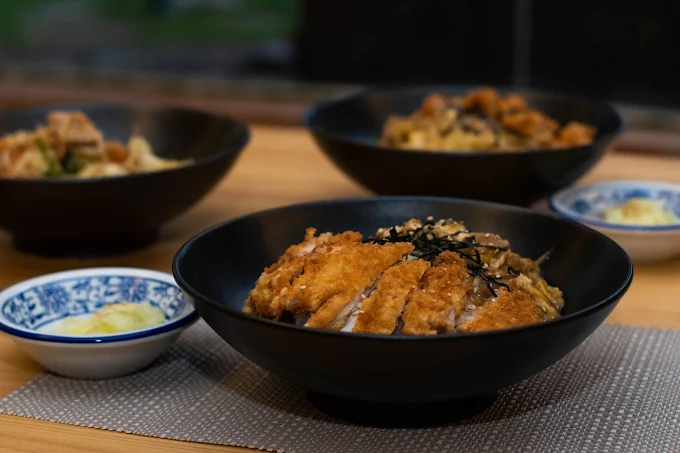

La mejor experiencia de cocina japonesa, con ambiente sofisticado, platos memorables y una propuesta visual inspirada en el diseño editorial de alto nivel.
Prestigio & confianza
Reconocido por su experiencia gastronómica
Ven y haz contacto por el sitio mejor valorizado por nuestros clientes.


Conoce más de
UFO
Un Viaje de Sabor en el Corazón del Cusco ¡Bienvenidos a bordo de UFO Asian Food! Somos expertos en fusionar los sabores más profundos de Asia con la calidez del ombligo del mundo
En nuestra "nave", cada plato se prepara con pasión y dedicación, ofreciendo una experiencia culinaria artesanal que te hará sentir fuera de este mundo.
20+
Años de experiencia
4.8/5
Valoración de clientes
100%
Ingredientes seleccionados
Contacto
Contáctanos
Nos encuentras justo al costado del Templo de San Francisco, en el camino la cuesta de Santa Ana. La entrada puede ser discreta (un secreto bien guardado), pero sigue las señales y las excelentes críticas en Google Maps para encontrarnos fácilmente
- Dirección: C. Tordo 174, Cusco
- Teléfono: +51 958383289
- Horario:
- Lun - Sab / 12:00 p.m. - 22:00 p.m.
- Dom / 13:00 p.m. - 22:00 p.m.